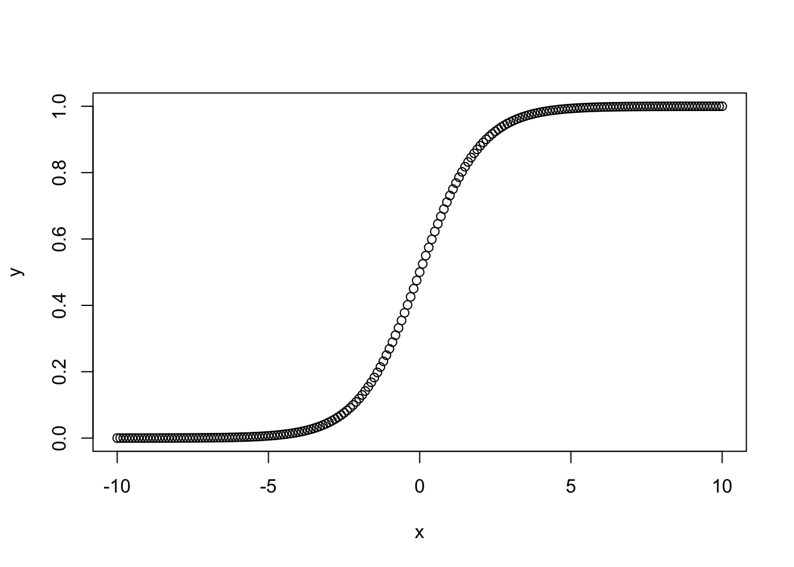
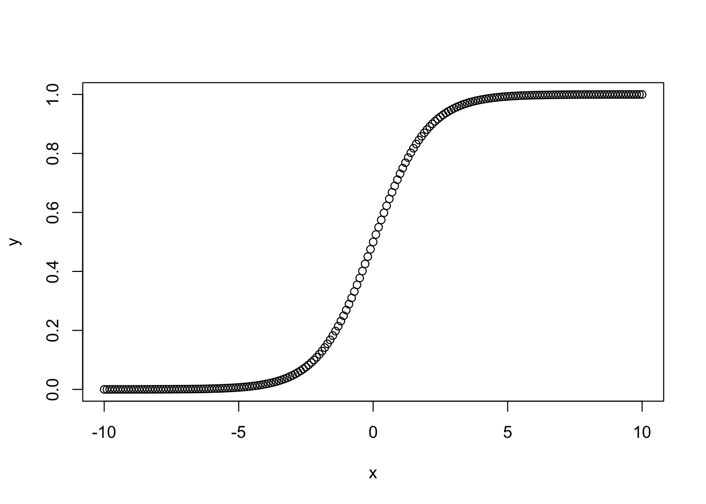
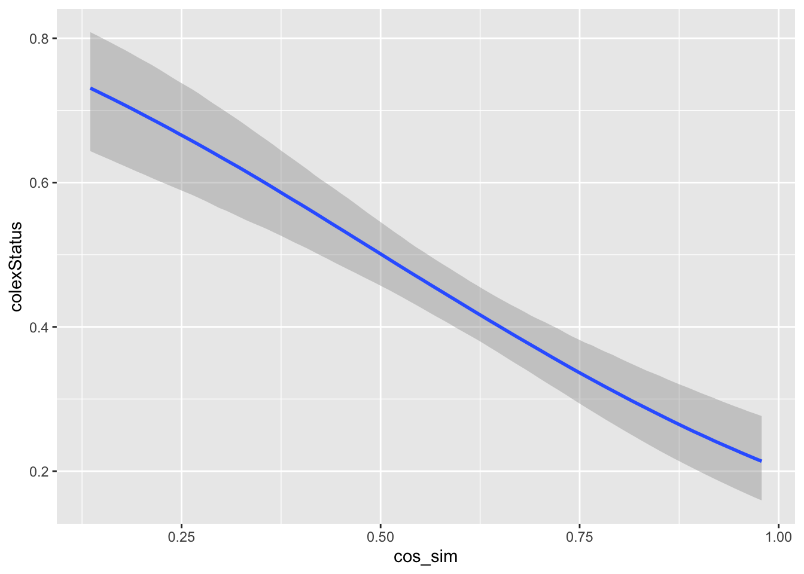
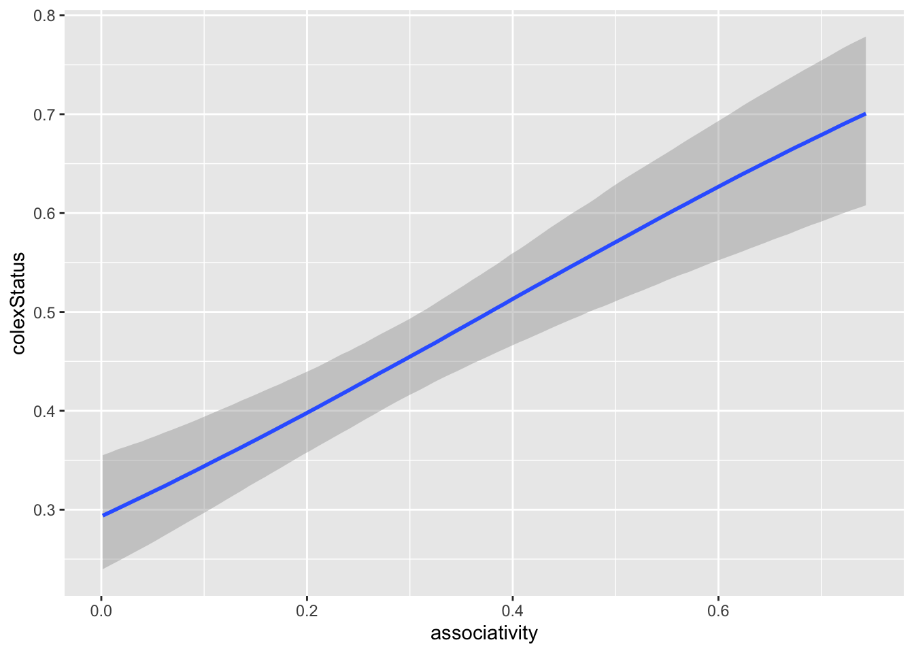
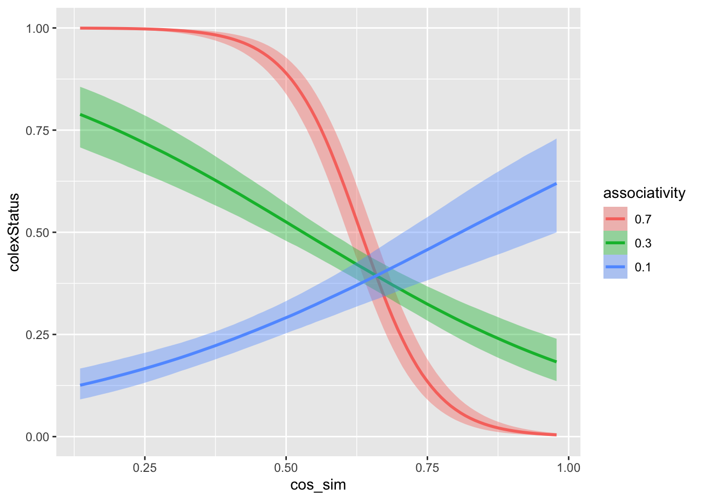
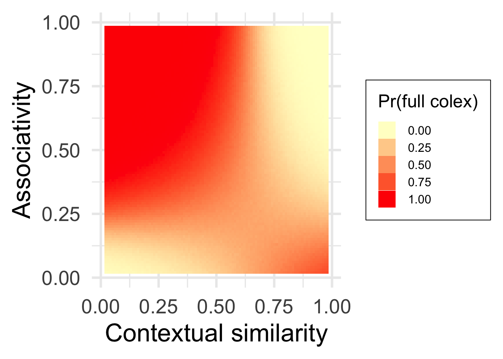

Code
inv.logit <- function(x){exp(x) / (1 + exp(x))}
x <- seq(-10,10,0.1)
y <- inv.logit(x)
plot(y ~ x)
Brochhagen et al. (to be submitted). The interaction of meanings’ similarity and confusability explains regularity in form-meaning mappings at and below the word level
Sometimes a Normal distribution is not the right model for our response variable (what we’re trying to predict). Maybe \(\mu\) and \(\sigma\) are not what we want to know; or maybe the response cannot take any real-numbered values. GLMs solve this issue. They are still linear: our predictor will be the outcome of a linear combination of predictors. However, we will apply a (so-called link) function to make this linear combination behave as we need it to model something other than the mean of a Normal distribution. In full generality, a linear model is also a generalized linear model with an identity link-function:
\[y \sim N(\mu, \sigma)\] \[f(\mu) = \alpha + \beta_0 x_0 + ... + \beta_n x_n,\]
where \(f(x) = x\).
Logistic regression is a regression using a Binomial distribution with a logit-link function. In simpler terms: It is coin-tossing distribution / the distribution that estimates probabilities. For a single coin-toss:
\[y_i \sim \text{Bernoulli}(p_i)\] \[p_i = f(\alpha + \beta_0 + ... + \beta_n x_n),\]
where \(f(x) = \text{inverse logit}(x)\).
\[\text{logit}(x) = \text{log}(\frac{x}{1 - x})\] \[\text{inverse logit}(x) = \frac{exp(x)}{1 + exp(x)}\]
inv.logit <- function(x){exp(x) / (1 + exp(x))}
x <- seq(-10,10,0.1)
y <- inv.logit(x)
plot(y ~ x)
library(dplyr)
library(brms)
library(ggplot2)
options(mc.cores = parallel::detectCores())
#relative_path <- 'pcolex/'
#relative_path <- './'
models_path <- 'pcolex/scripts/regr/models/'
df <- readr::read_csv('pcolex/data/colexification/list-lexibank-colex-filtered-scores.csv') %>%
select(concept_1, concept_2, colexStatus, family, variety, cos_sim, associativity)First look at data
head(df)# A tibble: 6 × 7
concept_1 concept_2 colexStatus family variety cos_sim associativity
<chr> <chr> <chr> <chr> <chr> <dbl> <dbl>
1 DRY THIRSTY partial Sino-Tibetan lexiba… 0.507 0.359
2 DRY THIRSTY partial Pama-Nyungan lexiba… 0.507 0.359
3 DRY THIRSTY partial Hmong-Mien lexiba… 0.507 0.359
4 DRY THIRSTY partial Hmong-Mien lexiba… 0.507 0.359
5 DRY THIRSTY partial Timor-Alor-Pant… lexiba… 0.507 0.359
6 DRY THIRSTY partial Timor-Alor-Pant… lexiba… 0.507 0.359df <- df %>%
filter(cos_sim < 1) %>%
filter(associativity < 1) %>%
mutate(colexStatus = ifelse(colexStatus == 'full', 1, 0))
df %>% nrow()[1] 33738df %>%
group_by(colexStatus) %>%
summarize(n = n())# A tibble: 2 × 2
colexStatus n
<dbl> <int>
1 0 23918
2 1 9820We want to characterize whether a pair of meanings \(i\) and \(j\) fully or partially colexifies in a language \(l\). We fit five different models to see what best predicts this. All models have varying by-family intercepts and slopes (not put in the formulas below).
check_all_diagnostics <- function(m) {
rstan::check_hmc_diagnostics(m$fit)
print(ifelse(sum(rhat(m) > 1.05) > 1, 'Some R-hat > 1.05', 'No R-hat > 1.05'))
print(ifelse(sum(m$criteria$loo$diagnostics$pareto_k > 0.7), 'Some pareto-k > 0.7', 'No pareto-k > 0.7'))
}Model 1 (intercept-only):
\[y_{i,j,l} \sim \text{Bernoulli}(p_{i,j,l})\] \[p_{i,j,l} = \alpha\]
m0 <- brm(data = df,
formula = colexStatus ~ 1 + (1 | family),
family = bernoulli(link = 'logit'),
file = paste0(models_path, 'm0')
)
m0 <- add_criterion(m0, 'loo')
check_all_diagnostics(m0)
Divergences:0 of 4000 iterations ended with a divergence.
Tree depth:0 of 4000 iterations saturated the maximum tree depth of 10.
Energy:E-BFMI indicated no pathological behavior.[1] "No R-hat > 1.05"
[1] "No pareto-k > 0.7"Model 2 (context):
\[y_{i,j,l} \sim \text{Bernoulli}(p_{i,j,l})\] \[p_{i,j,l} = \alpha + \beta_1 \text{cos.sim}(i,j)\]
m1 <- brm(data = df,
formula = colexStatus ~ cos_sim + (cos_sim | family),
family = bernoulli(link = 'logit'),
file = paste0(models_path, 'm1')
)
m1 <- add_criterion(m1, 'loo')
#check_all_diagnostics(m1)Model 3 (associativity):
\[y_{i,j,l} \sim \text{Bernoulli}(p_{i,j,l})\] \[p_{i,j,l} = \alpha + \beta_1 \text{assoc}(i,j)\]
m2 <- brm(data = df,
formula = colexStatus ~ associativity + (associativity | family),
family = bernoulli(link = "logit"),
file = paste0(models_path, 'm2')
)
m2 <- add_criterion(m2, 'loo')
#check_all_diagnostics(m2)Model 3 (associativity + context):
\[y_{i,j,l} \sim \text{Bernoulli}(p_{i,j,l})\] \[p_{i,j,l} = \alpha + \beta_1 \text{assoc}(i,j) + \beta_2 \text{cos.sim}(i,j) \]
m3 <- brm(data = df,
formula = colexStatus ~ cos_sim + associativity + (cos_sim + associativity | family),
family = bernoulli(link = 'logit'),
file = paste0(models_path, 'm3')
)
m3 <- add_criterion(m3, 'loo')
#check_all_diagnostics(m3)Model 4 (associativity * context):
\[y_{i,j,l} \sim \text{Bernoulli}(p_{i,j,l})\] \[p_{i,j,l} = \alpha + \beta_1 \text{assoc}(i,j) + \beta_2 \text{cos.sim}(i,j) + \beta_3 (\text{assoc}(i,j) \times \text{cos.sim}(i,j)\]
m6 <- brm(data = df,
formula = colexStatus ~ cos_sim * associativity + (cos_sim * associativity | family),
family = bernoulli(link = 'logit'),
file = paste0(models_path, 'm6')
)
m6 <- add_criterion(m6, 'loo')
#check_all_diagnostics(m6)library(kableExtra)
loo_comp <- loo_compare(m0, m1, m2, m3, m6)
loo_comp %>%
tibble::as.tibble() %>%
mutate(ELPD.diff = paste0(round(elpd_diff,1), ' (', round(se_diff, 1), ')'),
ELPD = paste0(round(elpd_loo,1), ' (', round(se_elpd_loo, 1), ')')) %>%
select(ELPD.diff, ELPD) %>%
mutate(Model = rownames(loo_comp)) %>%
relocate(Model) %>%
kbl(row.names = FALSE, booktabs = TRUE, linesep = '') %>%
kable_styling(latex_options = 'striped') | Model | ELPD.diff | ELPD |
|---|---|---|
| m6 | 0 (0) | -16436.6 (84.1) |
| m3 | -1090.4 (41.5) | -17526.9 (82.4) |
| m1 | -1498.9 (49.8) | -17935.5 (80.3) |
| m2 | -1504.9 (47.6) | -17941.5 (81.4) |
| m0 | -2174.3 (55.4) | -18610.8 (80.2) |
feff_best <- fixef(m6)
feff_best %>%
tibble::as_tibble() %>%
mutate(Estimate = paste0(round(Estimate, 2), ' (', round(Est.Error,2), ')'),
Q2.5 = round(Q2.5, 2),
Q97.5 = round(Q97.5, 2)) %>%
select(-Est.Error) %>%
mutate(Coefficient = row.names(feff_best)) %>%
relocate(Coefficient) %>%
kbl(row.names = FALSE, booktabs = TRUE, linesep = '') %>%
kable_styling(latex_options = 'striped') | Coefficient | Estimate | Q2.5 | Q97.5 |
|---|---|---|---|
| Intercept | -4.39 (0.27) | -4.95 | -3.86 |
| cos_sim | 6 (0.55) | 4.93 | 7.17 |
| associativity | 20.54 (1.13) | 18.45 | 22.88 |
| cos_sim:associativity | -31.16 (1.86) | -35.10 | -27.79 |
library(brms)
library(dplyr)
library(ggplot2)
library(ggokabeito)
library(patchwork)
b_model <- brm(file = 'pcolex/scripts/regr/models/m6.rds')
cos_sim <- seq(0.001,0.999, 0.01)
associativity <- seq(0.001,0.999, 0.01)
df <- data.frame(expand.grid(cos_sim, associativity))
colnames(df) <- c('cos_sim', 'associativity')
df_pred <- predict(b_model, newdata = df, re_formula = NA)
df <- cbind(df, df_pred)
p_pred <- df %>%
ggplot(aes(x = cos_sim, y = associativity, fill = Estimate)) +
geom_tile() +
scale_fill_gradient2(low = "#075AFF",
mid = "#FFFFCC",
high = "#FF0000") +
theme_minimal(base_size = 25) +
xlab('Contextual similarity') +
ylab('Associativity') +
xlim(c(0.01,0.99)) +
ylim(c(0.01, 0.99)) +
guides(fill=guide_legend(title="Pr(full colex)")) +
theme(legend.position = 'right',#c(0.85,0.85),
legend.box.background=element_rect(fill= 'white'),
legend.text=element_text(size=12),
legend.title=element_text(size=18))
p_cos <- plot(conditional_effects(b_model, effects=c('cos_sim')))[[1]]
p_ass <- plot(conditional_effects(b_model, effects=c('associativity')))[[1]]
p_interaction <- plot(conditional_effects(b_model,
effects=c('cos_sim:associativity'),
int_conditions = list(
'associativity' = c(0.1, 0.3, 0.7)
)
))[[1]]
#p_interaction
p_interaction <- p_interaction + xlab('Contextual similarity') +
ylab('Probability( full colexification )') +
# guides(fill=guide_legend(title="Associativity")) +
theme_minimal(base_size = 25) +
theme(legend.position = c(0.85,0.85),
legend.box.background=element_rect(fill="white"),
legend.text=element_text(size=18),
legend.title=element_text(size=18)) #+
# scale_fill_manual('Associativity',values=c("orange","red",'blue'))
p_cos <- p_cos + xlab('Contextual similarity') +
ylab('Probability( full colexification )') +
theme_minimal(base_size = 25) +
ylim(0,1) #+ xlim(0,1)
p_ass <- p_ass + xlab('Associativity') +
ylab('Probability( full colexification )') +
theme_minimal(base_size = 25) +
ylim(0,1)
# xlim(0,1)
p_pred